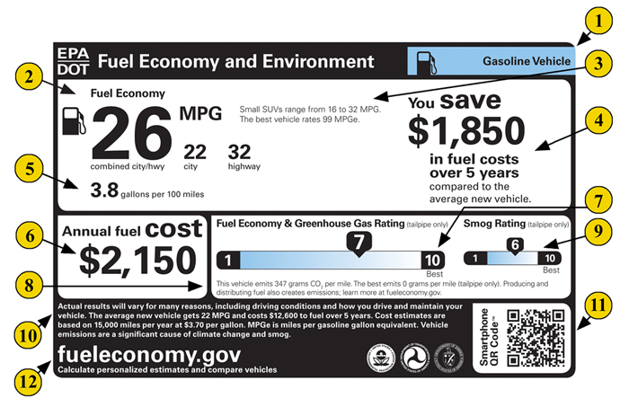

Gallons per 100 Miles
The problem is that mpg is a fraction with miles in the numerator and gallons in the denominator. It's convenient for questions with answers expressed in miles, such as: "If my car has 5 gallons left in the tank, and it gets 30 miles per gallon, how many miles can I go without stopping for gas?"
\[
\frac{30 \, mi.}{1 \, gal.} * 3 \, gal. = 150 \, mi.
\]
More often, however, you want answers expressed in gallons. Gallons are what matter to your budget and the environment (100 gallons emits one ton of CO2). Therefore, it makes sense to put gallons in the numerator. A direct way would be to flip mpg and use gallons per mile:
\[
\frac{1}{25 \, mi./gal.} = \frac{.04 \, gal. }{1\,mi.}
\]
But you'd have say, "point zero..." a bunch of times. A better way is to use gallons per 100 miles (gphm):
\[
\frac{.04 \, gal}{1 mi.} * \frac{100 \,mi.}{100\,mi.} = \frac{4 \, gal. }{100 \,mi.}
\]
Litres per 100 km is standard in Europe, because when you put gallons in the numerator, comparing fuel usage is easy:
LINE CHART WITH GALLONS PER MILE ON THE X AXIS
Policy and Environmental Implications
Does all this mean it's alright to buy a new SUV just slightly more efficient than your old SUV? Just the opposite. If you're upgrading from 14 to 18 mpg, you're still in the domain where each mpg saves lots of gas, and you can cut your usage 28% by reaching for a 25 mpg sedan instead. That's why Larrick and Soll argue, "removing the most inefficient vehicles is where policy and popular opinion should be focused." In other words, it's more important to nudge drivers from SUV's to normal cars than from normal cars to hybrids.
Fortunately, the government has already taken steps to steer the conversation. In the 2009 best-seller Nudge, U. Chicago economists Cass Sunstein and Richard Thaler discussed "The MPG Illusion" at length, and when President Obama appointed Sunstein to run the Office of Information and Regulatory Affairs, Sunstein worked to include "gallons per 100 miles" on vehicle showroom stickers that came out this year.

As Nobel Laureate Daniel Kahneman noted, "The five-year interval between the publication of 'The MPG Illusion' and the implementation of a partial correction is probably a speed record for a significant application of psychological science to public policy" (p. 373).